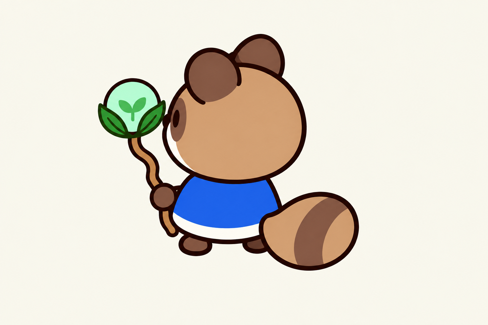
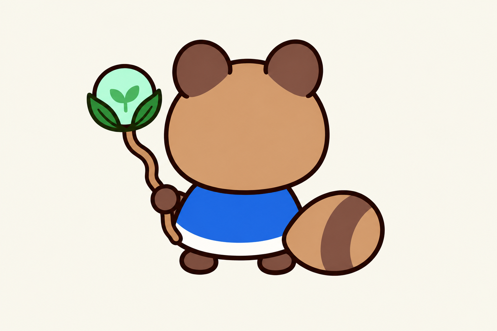

머리·몸통·동그란 손·굽은 지팡이·숲 오브·꼬리를 조립한 방향별 검토안입니다. 각도 표기는 목표 방향이며 정확한 투영 보정 전입니다.


슬라이더로 방향 전환을 비교할 수 있습니다.
검토 필요: 대각과 측면의 회전 차이, 머리·꼬리 크기, 지팡이 굴곡과 손 가림이 완전히 일치하지 않습니다. 오른쪽 시안은 단순 반전처럼 읽히는 부분이 있어 장비를 든 손의 일관성을 보정해야 합니다. 최종 스프라이트나 파트별 출력으로 승인된 상태는 아닙니다.